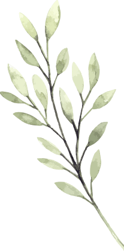
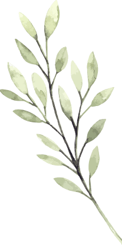

Настоящая Политика конфиденциальности персональной информации (далее — Политика) действует в отношении всей информации, которую ООО «Master Vision» и/или его аффилированные лица, могут получить о пользователе во время использования им любого из сайтов, сервисов, служб, программ и продуктов ООО «Master Vision» (далее — Сервисы).
Использование Сервиса означает безоговорочное согласие пользователя с настоящей Политикой и указанными в ней условиями обработки его персональной информации; в случае несогласия с этими условиями пользователь должен воздержаться от использования Сервиса.
1. Персональная информация пользователей, которую получает и обрабатывает ООО «Master Vision»
1.1. В рамках настоящей Политики под «персональной информацией пользователя» понимаются:
1.1.1. Персональная информация, которую пользователь предоставляет о себе самостоятельно при регистрации (создании учётной записи) или в процессе использования Сервиса, включая персональные данные пользователя. Обязательная для предоставления Сервиса (оказания услуг) информация помечена специальным образом. Иная информация предоставляется пользователем на его усмотрение.
1.1.2 Данные, которые автоматически передаются Сервису в процессе их использования с помощью установленного на устройстве пользователя программного обеспечения, в том числе IP-адрес, информация из cookie, информация о браузере пользователя (или иной программе, с помощью которой осуществляется доступ к Сервису), время доступа, адрес запрашиваемой страницы.
1.1.3 Иная информация о пользователе, сбор и/или предоставление которой определено в Регулирующих документах отдельных Сервисов.
1.2. Настоящая Политика применима только к Сервису ООО «Master Vision». ООО «Master Vision» не контролирует и не несет ответственность за сайты третьих лиц, на которые пользователь может перейти по ссылкам, доступным на сайтах ООО «Master Vision», в том числе в результатах поиска. На таких сайтах у пользователя может собираться или запрашиваться иная персональная информация, а также могут совершаться иные действия.
1.3. ООО «Master Vision» в общем случае не проверяет достоверность персональной информации, предоставляемой пользователями, и не осуществляет контроль за их дееспособностью. Однако ООО «Master Vision» исходит из того, что пользователь предоставляет достоверную и достаточную персональную информацию по вопросам, предлагаемым в форме регистрации, и поддерживает эту информацию в актуальном состоянии.
2. Цели сбора и обработки персональной информации о пользователе
2.1. ООО «Master Vision» собирает и хранит только те персональные данные, которые необходимы для предоставления Сервиса и оказания услуг (исполнения соглашений и договоров с пользователем).
2.2. Персональную информацию пользователя ООО «Master Vision» может использовать в следующих целях:
2.2.1. Идентификация стороны в рамках соглашений и договоров с ООО «Master Vision»;
2.2.2. Предоставление пользователю персонализированных Сервисов;
2.2.3. Связь с пользователем, в том числе направление уведомлений, запросов и информации, касающихся использования Сервиса, оказания услуг, а также обработка запросов и заявок от пользователя;
2.2.4. Улучшение качества Сервиса, удобства их использования, разработка новых Сервисов и услуг;
2.2.5. Таргетирование рекламных материалов;
2.2.6. Проведение статистических и иных исследований на основе обезличенных данных.
3. Условия обработки персональной информации пользователя и её передачи третьим лицам
3.1. ООО «Master Vision» хранит персональную информацию пользователей в соответствии с внутренними регламентами конкретных сервисов.
3.2. В отношении персональной информации пользователя сохраняется ее конфиденциальность, кроме случаев добровольного предоставления пользователем информации о себе для общего доступа неограниченному кругу лиц. При использовании отдельных Сервисов пользователь соглашается с тем, что определённая часть его персональной информации становится общедоступной.
3.3. ООО «Master Vision» вправе передать персональную информацию пользователя третьим лицам в следующих случаях:
3.3.1. Пользователь выразил свое согласие на такие действия;
3.3.2. Передача необходима в рамках использования пользователем определенного Сервиса либо для оказания услуги пользователю;
3.3.3. Передача предусмотрена российским или иным применимым законодательством в рамках установленной законодательством процедуры;
3.3.4. Такая передача происходит в рамках продажи или иной передачи бизнеса (полностью или в части), при этом к приобретателю переходят все обязательства по соблюдению условий настоящей Политики применительно к полученной им персональной информации;
3.3.5. В целях обеспечения возможности защиты прав и законных интересов ООО «Master Vision» или третьих лиц в случаях, когда пользователь нарушает Пользовательское соглашение сервиса.
3.4. При обработке персональных данных пользователей ООО «Master Vision» руководствуется Федеральным законом РФ «О персональных данных».
4. Изменение пользователем персональной информации
4.1. Пользователь может в любой момент изменить (обновить, дополнить) предоставленную им персональную информацию или её часть, а также параметры её конфиденциальности, воспользовавшись функцией редактирования персональных данных в персональном разделе соответствующего Сервиса.
4.2. Пользователь также может удалить предоставленную им в рамках определенной учетной записи персональную информацию, воспользовавшись функцией «Отписаться от рассылки» в персональном разделе соответствующего Сервиса При этом удаление аккаунта может повлечь невозможность использования некоторых Сервисов.
5. Меры, применяемые для защиты персональной информации пользователей ООО «Master Vision» принимает необходимые и достаточные организационные и технические меры для защиты персональной информации пользователя от неправомерного или случайного доступа, уничтожения, изменения, блокирования, копирования, распространения, а также от иных неправомерных действий с ней третьих лиц.
6. Изменение Политики конфиденциальности. Применимое законодательство
6.1. ООО «Master Vision» имеет право вносить изменения в настоящую Политику конфиденциальности. При внесении изменений в актуальной редакции указывается дата последнего обновления. Новая редакция Политики вступает в силу с момента ее размещения, если иное не предусмотрено новой редакцией Политики. Действующая редакция всегда находится на странице по адресу http://mastervision.su/confidential/.
6.2. К настоящей Политике и отношениям между пользователем и ООО «Master Vision», возникающим в связи с применением Политики конфиденциальности, подлежит применению право Российской Федерации.
7. Обратная связь. Вопросы и предложения
Все предложения или вопросы по поводу настоящей Политики следует сообщать в Службу поддержки пользователей Mastervision (info@mastervision.su)
 
